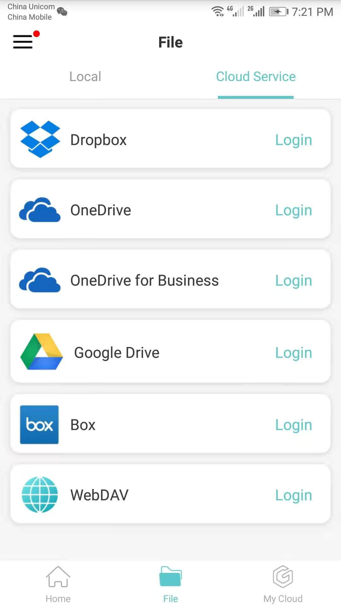
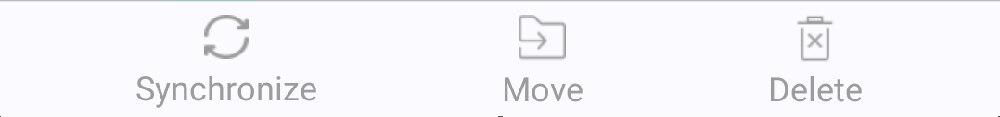

Operation Steps:
(1) Tap “Edit”on the top right corner of this page;；
(2) Select files to upload;
(3) Tap
(4) Select the account where do you want to upload;
(5) Select the location(you could tap
(6) Tap “Ok” to finish uploading.
In this page, there are two tabs, Local and Cloud Service.Tap Menu icon to display menus on the left.
It could display files that saved in local and in your Cloud Service. You can browse, edit, and manage local
drawings off-line via your mobile device.
1. Local
It displays all files saved in your device.
1. Related operations:
Batch operations:
Tap “Edit”on
the top right corner of this page, you could select files or folders in current page and do batch operations as
follow shown:
 Upload：you
could upload selected files in this page to your logged in Dropbox (Folders could not be uploaded).
Upload：you
could upload selected files in this page to your logged in Dropbox (Folders could not be uploaded).
Operation
Steps:
(1) Tap “Edit”on the top right
corner of this page;；
(2) Select files to upload;
(3) Tap  “Upload”;
“Upload”;
(4) Select the account where do you want to upload;
(5) Select the
location(you could tap
 “New Folder” to create a new folder
if necessary);
“New Folder” to create a new folder
if necessary);
(6) Tap “Ok” to finish uploading.
Move/Copy： you could move/copy one or more files to any other location.
Operation steps:
(1) Tap “Edit”
on the top right corner of this page;
(2) Select files to move/copy;
(3) Tap “Move/Copy”;
(4) Select the location(you could tap
 “New Folder” to create a new folder
if necessary);
“New Folder” to create a new folder
if necessary);
(5) Tap “Ok” to finish moving/copying.
 Delete：delete selected files.
Delete：delete selected files.
Tap “Edit” again to cancel selection.
Filter: filter files by formats.
Sort: sort files by name, time, size, or type.
New Folder: create a new file folder in current page.
 Search: Search files in current page.
Search: Search files in current page.
 Thumbnail: files display in thumbnail mode.
Thumbnail: files display in thumbnail mode.
 List: files display in list mode.
List: files display in list mode.
Path: display current file path. Tap on folder name in file path to open this file folder.
Detail: display the detail information, including file name, type, size, location, time, and other related operation, such as Share, Upload, Rename, Delete, Favorite, Move, and Copy. Tap “Open” button on the right top corner to open the file.
Tap: tap on file to open it.
Long Press: after long pressing on file it displays all related operations, such as Share, Upload, Favorite, Rename, Move, Copy, Delete, Detail, and Cancel.
Pull-down: pull-down to refresh the file list.
2. Cloud Service
(1) Choose Cloud Service
Currently,the Dropbox, OneDrive, OneDrive for Business, Google Drive, Box, and WebDAV are available.

You could log in cloud service account, browse, and download files from cloud service storage; and you could freely
upload or download files between the local and cloud service storage.
(2) Add Cloud Service
(3) Files
Related operations:
Batch operations:
Tap “Edit”on the top right corner of this
page, you could select files in current page and do the following related batch operations:

 Synchronize:
when there is something different between the files in local and in server, you cloud tap “Synchronize”
to keep them the same. The newer version will automatically replace the older version.
Synchronize:
when there is something different between the files in local and in server, you cloud tap “Synchronize”
to keep them the same. The newer version will automatically replace the older version.
Operation Steps:
(1) Tap “Edit” on the top right corner of
this page;
(2) Select files to synchronize;
(3) Tap  “Synchronize”;
“Synchronize”;
(4) Popping up progress dialog box, when it goes to 100%, synchronizing files finished. You could also cancel it by
tapping “Cancel”.
Move：you
could move one or more files to any other location.
Operation steps:
(1) Tap “Edit” on the top right corner of
this page;
(2) Select files to move;
(3) Tap “Move”;
(4) Select the location(you could tap  “New
Folder” to create a new folder if necessary);
“New
Folder” to create a new folder if necessary);
(5) Tap “Ok” to finish moving.
 Delete:
delete selected files.
Delete:
delete selected files.
Tap “Edit” again to cancel selection.
Filter: filter files by formats.
Sort: sort files by name, time, size, or type.
New Folder: create a new file folder in current page.
 Search: Search files in current page.
Search: Search files in current page.
 Thumbnail: files display in thumbnail mode.
Thumbnail: files display in thumbnail mode.
 List: files display in list mode.
List: files display in list mode.
Path: display current file path. Tap on folder name in file path to open this file folder.
File status and its tapping operations: ：
Red and Synchronize: it means there is something different between files
in local and in server. Tap Red and Synchronize button to automatically synchronize them and keep them the same. The
newer version will replace the older version. Tap file to open it without synchronizing.
Green: it means the file is downloaded from server. The file in local is the same as it in server.
Tap file to open it.
Gray: it means the file has not downloaded yet. Tap a file to download it. After downloading, the
file automatically opened, and the gray button turns to be green button.
Yellow: it means the file in local has been modified, and its copy in Cloud Service storage server
has been modified separately.
Tap on file name to open the local file; and tap on yellow button to synchronize them: move the local file to
“Donwnloaded”/ “Confilict” file folder, and download its copy in Cloud Service storage
server to local.
Long Press: after long pressing on file it displays all related operations, such as Synchronize, Move, Delete, Detail, and Cancel.
Pull-down: pull-down to refresh the file list.
Log out: tapping “Cloud Service” in file path, it display the logged in Dropbox account. You could tap “Logout” to exit.
(4) Offline
When a drawing has been downloaded to local, it becomes an offline file.
In this page, it displays all offline files from Cloud Serivce. There is a Conflicted File Folder; files which have
conflicts are saved in this folder.
Related operations:
Batch operations:
Tap “Edit”on
the top right corner of this page, you could select files in current page and do batch operations as follow shown:
Copy: you
could copy one or more files to any other location.
Operation steps:
(1) Tap “Edit” on the top right corner of
this page;
(2) Select files to copy;
(3) Tap “Copy”;
(4) Select the location(you could tap  “New
Folder” to create a new folder if necessary);
“New
Folder” to create a new folder if necessary);
(5) Tap “Ok” to finish moving.
 Delete:
delete selected files.
Delete:
delete selected files.
Tap “Edit” again to cancel selection.
Filter: filter files by formats.
Sort: sort files by name, time, size, or type.
 Search: Search files in current page.。
Search: Search files in current page.。
 Thumbnail: files display in thumbnail mode.
Thumbnail: files display in thumbnail mode.
 List: files display in list mode.
List: files display in list mode.
Path: display current file path. Tap on folder name in file path to open this file folder.
Detail: display the detail information, including file name, type, size, location, time, and other related operation, such as Share, Delete, Favorite, and Copy. Tap “Open” button on the right top corner to open the file.
Tap: tap on file to open it.
Long Press: after long pressing on file it displays all related operations, such as Share,Favorite, Copy, Delete, Detail, and Cancel.
Pull-down: pull-down to refresh the file list.
Conflicted File Folder
When is there a conflict occurred?
(1) you have logged in your Cloud Service in A device and B device via the same account.
(2) you have downloaded the same drawing to your two devices separately.
(3) You have modified the drawing and saved it in A device, and then you synchronize it to Cloud Service.
(4) You have modified the drawing and save it in B device, but you have not synchronize it to Cloud Service.
(5) In B device, if you pull-down to refresh or reentry your account, the drawing status becomes to be red. Tap the
red button, it prompts a conflict between files in local and in Cloud Service.
How to solve the conflict?
When it prompts a conflict between files in local and in Cloud Service, you could tap “Ok” to continue.
The file modified in A device(which has already been uploaded to Cloud Service) will be downloaded to B device, and
the file modified in B device will be saved to Conflicted File Folder.
What can I do for conflicted files?
Related operations:
Batch operations:
Tap “Edit”on
the top right corner of this page, you could select files in current page and do batch operations as follow shown:
Upload:  you could upload selected
files in this page to your logged in My Cloud account or Cloud account.
you could upload selected
files in this page to your logged in My Cloud account or Cloud account.
Operation Steps:
(1) Tap “Edit”on the top right corner of
this page;
(2) Select files to upload;
(3) Tap“Upload” ;
;
(4) Select the account where do you want to upload;
(5) Select the location(you could tap“New Folder” to create a new folder if necessary);
to create a new folder if necessary);
(6) Tap“Ok”to finish uploading;
Move/Copy：you could move/copy one or more files to any other location.
Operation steps:
(1) Tap “Edit” on
the top right corner of this page;
(2) Select files to move/copy;
(3) Tap “Move/Copy”；
(4) Select the location(you could tap
 “New Folder”to create a new folder if
necessary);
“New Folder”to create a new folder if
necessary);
(5) Tap “Ok” to finish moving/copying.
 Delete: delete selected files.
Delete: delete selected files.
Tap “Edit” again to cancel selection.
Filter: filter files by formats.
Sort: sort files by name, time, size, or type.
 Search: Search files in current page.
Search: Search files in current page.
 Thumbnail: files display in thumbnail mode.
Thumbnail: files display in thumbnail mode.
 List: files display in list mode.
List: files display in list mode.
Path: display current file path. Tap on folder name in file path to open this file folder.
Detail: display the detail information, including file name, type, size, location, time, and other related operation, such as Share, Upload, Rename, Delete, Favorite, Move, and Copy. Tap “Open” button on the right top corner to open the file.
Tap: tap on file to open it.
Long Press: after long pressing on file it displays all related operations, such as Share, Upload, Favorite, Rename, Move, Copy, Delete, Detail, and Cancel.
Pull-down: pull-down to refresh the file list.
Note: if you have not logged out, but lose the network connection, it displays downloaded files and conflicted files in your cloud Service account.